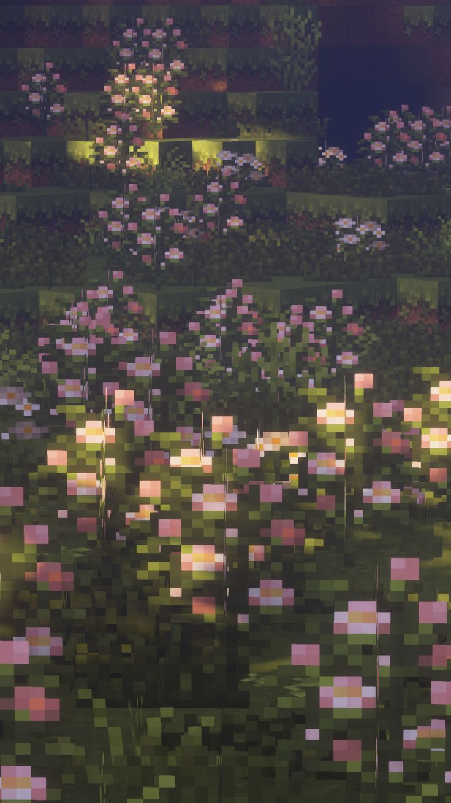

Some stories don't begin with grand gestures. They begin with one message. One smile. One person. And somehow... that becomes home.
The funniest thing is... Neither of us knew that one ordinary day would quietly become the beginning of everything.
You became the place where my heart feels safe. Even silence feels beautiful with you.
If I could relive one moment forever, I'd choose every ordinary day spent with you.

Dear you, Thank you for making ordinary days feel magical. Thank you for staying. Thank you for every laugh, every late-night conversation, every tiny memory that slowly became my favorite place.
If one day we forget how this all started, I hope this little website reminds us that love was always hidden inside the smallest moments.
Our favorite little moments.
♡ your smile
♡ your voice
♡ the way you make me laugh
♡ every memory we've made together
♡ you.
One day our favorite songs will remind us of this little place.
Loading...
No matter how many pages this diary will have... my favorite one will always be the page where our story began.